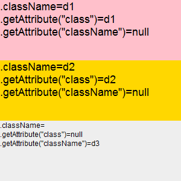
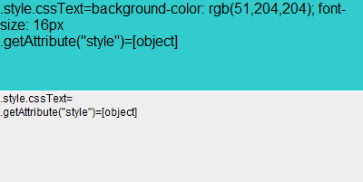
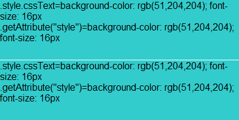

SD9006: IE 混淆了 DOM 对象属性（property）及 HTML 标签属性（attribute），造成了对 setAttribute、getAttribute 的不正确实现
标准参考
根据 DOM (Core) Level 1 规范中的描述，getAttribute 与 setAttribute 为 Element 接口下的方法，其功能分别是通过 "name" 获取和设置一个元素的属性（attribute）值。getAttribute 方法会以字符串的形式返回属性值，若该属性没有设定值或缺省值则返回空字符串。setAttribute 方法则无返回值。
在 DOM Level 2 规范中，则更加明确了 getAttribute 与 setAttribute 方法参数中的 "name" 的类型为 DOMString，setAttribute 方法参数中的 "value" 的类型为 DOMString，getAttribute 的返回值类型也为 DOMString。
DOMString getAttribute(in DOMString name); void setAttribute(in DOMString name, in DOMString value) raises(DOMException);
HTML 文档中的 DOM 对象的属性（property）被定义在 DOM (HTML) 规范中。这个规范中明确定义了 document 对象以及所有标准的 HTML 元素所对应的 DOM 对象拥有的属性及方法。
因为在早期的 DOM Level 0 阶段，某些 HTML 标签的属性会将其值暴露给对应的 DOM 对象的属性，如 HTML 元素的 id 属性与其对应的 DOM 对象的 id 属性会保持一种同步关系，然而这种方式目前已经废弃，这是由于它不能被扩展到所有可能存在的 XML 的属性名称。W3C 建议使用 DOM (Core) 中 Element 接口上定义的通用方法去获取（getting）、设置（setting）及删除（removing）元素的属性。
举例来说，在一个 HTML 文档中存在一个 SPAN 元素，根据 DOM (HTML) 规范，SPAN 元素在页面中生成一个相对应的对象，这个对象派生自 HTMLElement 接口，而 HTMLElement 接口则继承自 Element 接口。HTMLElement 接口中包含 id 属性。我们可以通过 HTMLElement 接口中的 id 属性获得这个元素的标识符，而通过 Element 接口中的 getAttibute 方法传入参数 "id" 同样可以获得标识符。
虽然这两种方式可以获得相同的值，但是却有着天壤之别。从规范层面上看，getAttribute 方法所属的 DOM (Core) 规范定义了访问和操作文档对象的一套对象和接口，这其中包含了对 HTML 及 XML 的解析及操作；HTMLElement 接口中 id 属性所属的 DOM (HTML) 规范为 DOM (Core) 的扩展，描述了 HTML 及 XHTML 的对象的细节。而从 HTML 文档代码的层面上看，一个元素的标记中的 HTML 属性（attribute）与其对应的 DOM 对象的属性（property）也是完全不同的两个概念。
关于 getAttribute 与 setAttribute 的详细信息，请参考 DOM (Core) Level 1 及 Level 2 中的内容。
关于 HTML DOM 对象 的详细信息，请参考 DOM (HTML) Document Object Model HTML，特别是 1.6.1. Property Attributes 中的内容。
问题描述
IE6 IE7 IE8(Q) 混淆了 DOM 对象的属性（property）及 HTML 标签属性（attribute）这两个概念。其对于 getAttribute 及 setAttribute 方法的实现与 HTML DOM 对象的属性的 getter 与 setter 操作等价，这个错误的实现方式导致了一系列的兼容性问题。而在 IE8(S) 中，导致的大多数兼容性问题已不存在，但是仍然可以通过 "Element.PropertyName" 访问到这个 HTML 元素的自定义属性。
造成的影响
- IE 各版本中可以通过 "Element.PropertyName" 访问 HTML 元素的自定义属性；
- IE 各版本中可以通过 "Element.getAttribute("value")" 及 "Element.setAttribute("value", "XXX")" 获取和设置 INPUT 文本框的实时输入的值（即 HTMLInputElement 对象的 value 属性，也叫做 current value）；
- IE6 IE7 IE8(Q) 中无法通过 "Element.setAttribute("class", "AttributeValue")" 设置元素的 class 属性，而需要使用 "Element.setAttribute("className", "AttributeValue")"；
- IE6 IE7 IE8(Q) 中无法通过 "Element.setAttribute("style", "AttributeValue")" 设置元素的 style 属性，通过 "Element.getAttribute("style")" 得到的不是元素的 style 属性的字符串值，而是一个对象；
- IE6 IE7 IE8(Q) 中无法通过诸如 "Element.setAttribute("onclick", "alert('ok')")" 为元素绑定事件；
- IE6 IE7 IE8(Q) 中可以通过诸如 "Element.getAttribute("offsetHeight")" 的方式获得元素的一些 DOM 属性的值，也可以通过诸如 "Element.setAttibute("innerHTML", "AttributeValue")" 的方式设置元素的一些非只读 DOM 属性的值。
受影响的浏览器
| IE6 IE7 IE8(Q) | |
|---|---|
| IE8(S) |
问题分析
在 MSDN 中的一篇名为 "Attribute Differences in Internet Explorer 8" 的一篇官方文档中提到，由于 DOM 属性（文中称作 "DOM attribute" ）通常与其所对应的 HTML 属性（文中称作 "content attribute" ）同名，因此常常被认为这两个 "属性" 的值是相同的。例如 DOM 中 BODY 对象的 background 属性（property）看上去似乎与 HTML 文档中 BODY 元素的 background 属性（attribute）的值相同。在早期版本的 IE 浏览器中， "property" 的值与分配给元素 "attribute" 的值相同，而同时 "property" 的值也以元素 "attribute" 的值为基础，因此，这两个值之间在术语上已变得含糊不清。
对于绝大多数 "property" 与 "attribute" 在名称及值类型上是统一的。但也有一些特例，
- 在 HTML 标签中使用 class 属性指定元素使用的 CSS 类，但在 DOM 对象中由于 class 是 ECMAScript 的保留字，所以改用 className 属性。
- HTML 标签中使用 style 属性指定元素的内联样式，但在 DOM 对象中虽然也存在 style 属性，但这个 style 属性是一个对象 CSSStyleDeclaration，而不是 DOMString。
- 而对于那些事件，则在 HTML 标签中使用字符串指定，在 DOM 对象中确是一个 function 对象。
接下来通过代码分析 IE 由于混淆 DOM 对象的属性（property）及 HTML 属性（attribute）导致的常见的兼容性问题。
1. IE 各版本中可以通过 "Element.PropertyName" 访问 HTML 元素的自定义属性
代码 custom_attributes_and_properties.html：
<!DOCTYPE html>
<html>
<head>
<script>
function $(id) { return document.getElementById(id); }
window.onload = function () {
var d1 = $("d1");
d1.setAttribute("setAttr2", "value2");
d1.customProperty3 = "value3";
d1.id = "d2";
var dn = document.createElement("div");
var str = [];
$("info2").value = $("cont").innerHTML;
for (var i in d1) {
if (!(i in dn)) {
str.push(i + ":" + d1[i] + "<br />");
}
}
$("info1").innerHTML = (str.length == 0) ? "N/A" : str.join("");
}
</script>
</head>
<body style="font:20px Arial;">
<div id="cont"><div id="d1" customAttr1="value1">'d1': HTMLDivElement 1</div></div>
<br />
<h1>Extra property:</h1>
<div id="info1"></div>
<br />
<h1>HTML code:</h1>
<textarea id="info2" cols="200" style="font:16px Arial;"></textarea>
</body>
</html>
上面代码中，DIV 元素【d1】在其 HTML 标签上出现了 1 个自定义属性（attribute）——customAttr1。页面加载完成后，使用 setAttribute 方法为【d1】的标签上设置了 setAttr2 属性，为【d1】对应的 HTMLDivElement 对象设置了 customProperty3 属性，为【d1】对应的对象设置了 id 属性。
然后，通过 "for..in" 遍历【d1】对应的 HTMLDivElement 对象内的属性（property），为了方便观察，特地通过与一个新创建的 HTMLDivElement 对象做比较，过滤了两者重复的对象属性，只显示出与新创建的 HTMLDivElement 对象存在差异的属性及属性值。
这段代码在不同的浏览器环境中的表现：
| IE6 IE7 IE8 | Firefox Chrome Safari Opera | |
|---|---|---|
| Extra property | customAttr1:value1 setAttr2:value2 customProperty3:value3 |
customProperty3:value3 |
| HTML code | <DIV id="d2" customAttr1="value1" setAttr2="value2" customProperty3="value3">'d1': HTMLDivElement 1</DIV> | <div id="d2" customattr1="value1" setattr2="value2">'d1': HTMLDivElement 1</div> |
在解析 HTML 文档时，所有版本的 IE 中自定义的 HTML 标签属性成为了该元素对应的 DOM 对象中的属性，这使得可以通过 "d1.customAttr1" 或者 "d1["customAttr1"]" 获取的到这个自定义 HTML 属性的值。在使用 setAttribute 方法为元素的标签设置自定义 HTML 属性后，该元素对应的 DOM 对象上也会自动绑定上这个属性名及其属性值。同时，在为元素对应的 DOM 对象设置了一个属性后，其在 HTML 文档中对应的元素的 HTML 标签上也会出现这个自定义的属性名及其属性值。
而在 Firefox Chrome Safari Opera 中，可以看到元素的 HTML 标签属性（attribute）和元素对应的 DOM 对象属性（property）是清晰地被分开的。
根据规范，HTMLDivElement 接口继承自 HTMLElement，实现了 HTMLDivElement 接口的对象（即 HTML 文档中 DIV 元素所对应的 DOM 对象）拥有 HTMLElement 接口中定义的所有属性（id、title、lang、dir、className 属性）及方法，以及其私有的 align 属性。【d1】最初在其 HTML 标签代码中有 id 及 customAttr1 两个属性，根据 DOM 规范，DIV 元素的 id 属性是会将其暴露给其对应的 HTMLDivElement 对象的 id 属性的，此时这两个层面的 id 属性会保持同步，即浏览器在解析 HTML 文档时，会将【d1】标签内的 id 属性及其值绑定至【d1】所对应的 DOM 对象上；同时当设置其 DOM 对象的 id 属性时，【d1】的 HTML 标签上的 id 属性也会随着发生变化。
customAttr1 为自定义属性，DOM 规范中所有的实现接口中均不包含这个属性。这时由于不存在 DOM 规范中所描述的绑定关系，浏览器会认为 customAttr1 属性仅为这个 DOM 对象上的一个普通属性，和其对应的 HTML 文档中的标签属性没有任何关系。所以为 DOM 对象设置一个自定义属性不会对 HTML 文档产生任何效果。
setAttr2 属性同样为自定义属性，同样不存在 DOM 规范中所描述的绑定关系，使用 setAttribute 方法设置的 setAttr2 属性仅仅是为【d1】的 HTML 标签上设置了一个自定义的 HTML 属性，这个操作只影响 HTML 文档内容，不应对 DOM 对象自身产生作用。
本例中，可以认为 IE 沿用了 W3C 规范中明确弃用的做法，将 HTML 规范中未定义的自定义属性也“暴露”给了对应的 DOM 对象，使得 HTML 元素的自定义属性与对应的 DOM 对象的自定义属性也会像规定中定义了绑定关系的那些标准属性一样可以保持着一种同步关系。
2. IE 各版本中可以通过 "Element.getAttribute("value")" 及 "Element.setAttribute("value", "XXX")" 获取和设置 INPUT 元素的实时输入的值
代码 attribute_and_property_value.html：
<!DOCTYPE html>
<html>
<head>
<style>
input, textarea { font:12px consolas; width:400px; }
</style>
<script>
function $(id) { return document.getElementById(id); }
function addInputEvent(elem, handler, useCapture) {
elem.addEventListener ? elem.addEventListener("input", handler, false) :
elem.attachEvent("onpropertychange", handler);
}
window.onload = function () {
var psw = $("psw"), cont = $("cont"), ta = $("ta"), txt;
var inputing = function () {
txt = cont.innerHTML + '\npsw.value:' + psw.value + '\npsw.getAttribute("value"):' + psw.getAttribute("value");
ta.value = txt;
}
addInputEvent(psw, inputing);
inputing();
}
</script>
</head>
<body>
<div id="cont"><input id="psw" type="text" value="old value" /></div>
<textarea id="ta" style="height:100px;"></textarea>
</body>
</html>
上面代码中 INPUT 文本框的 value 初始值为 "old value"，当在文本框内输入字符时，会在其下方实时显示 INPUT 文本框的 HTML 标签代码，以及其 DOM 对象的 value 属性值和 getAttribute("value") 得到的值。
这段代码在不同的浏览器环境中的表现：
| IE6 IE7 IE8 | Firefox Chrome Safari Opera | |
|---|---|---|
| 初始状态："old value" | <INPUT id=psw value="old value" type=text> psw.value:old value psw.getAttribute("value"):old value |
<input id="psw" type="text" value="old value"> psw.value:old value psw.getAttribute("value"):old value |
| 清空文本框："" | <INPUT id=psw type=text > psw.value: psw.getAttribute("value"):null |
<input id="psw" type="text" value="old value"> psw.value: psw.getAttribute("value"):old value |
| 输入新值："12345" | <INPUT id=psw value=12345 type=text> psw.value:12345 psw.getAttribute("value"):12345 |
<input id="psw" type="text" value="old value"> psw.value:12345 psw.getAttribute("value"):old value |
根据 DOM Level 2 HTML 规范中的描述，当 INPUT 元素 type 属性为 "text"、"file" 或 "password" 时，其对应的 HTMLInputElement 对象的 value 属性代表了这个控件 "当前值"，修改这个属性会改变控件的 "当前值"，但是并不会改变其 HTML 标签上的 value 属性。
根据 HTML4.01 规范中的描述，一个 INPUT 元素 HTML 标签上的 value 属性指定了这个控件的 "初始值"。最初的 "当前值" 会采用 "初始值"。
即，对于本例中的 INPUT 元素，其 HTML 标签内的 value 属性为 "old value"，则初始值为 "old value"，而最初的 "当前值" 也为 "old value"。在用户改变 INPUT 文本框的内容时，"当前值" 发生变化，此时这个 INPUT 文本框对应的 DOM 对象的 value 属性也随着 "当前值" 而变化，但并不会影响到文本框的 HTML 标签上的 value 属性。
可以看到在 Firefox Chrome Safari Opera 中，在 INPUT 元素的输入新的 "当前值" 尽可以改变文本框对应的 DOM 对象的 value 属性。而在 IE 中，HTML 标签的 value 属性也会跟随 "当前值" 的变化而变化。
所以，只有在 IE 中可以通过 getAttribute("value") 可以获取到 INPUT 文本框内的实时内容。
3. IE6 IE7 IE8(Q) 中无法通过 "Element.setAttribute("class", "AttributeValue")" 设置元素的 class 属性
代码 attribute_and_property_class.html：
<!DOCTYPE html>
<html>
<head>
<style>
div { width:300px; height:100px; background:#eee; font:12px Arial; }
.d1 { background:pink; font:18px Arial; }
.d2 { background:gold; font:18px Arial; }
.d3 { background:plum; font:18px Arial; }
</style>
<script>
function getClass(obj) {
obj.innerHTML = '.className=' + obj.className +
'<br>.getAttribute("class")=' + obj.getAttribute("class") +
'<br>.getAttribute("className")=' + obj.getAttribute("className");
}
window.onload = function () {
var d1 = document.getElementById("d1");
var d2 = document.getElementById("d2");
var d3 = document.getElementById("d3");
d1.className = "d1";
d2.setAttribute("class", "d2");
d3.setAttribute("className", "d3");
getClass(d1);
getClass(d2);
getClass(d3);
}
</script>
</head>
<body>
<div id="d1">d1</div>
<div id="d2">d2</div>
<div id="d3">d3</div>
</body>
</html>
上面代码中分别使用 obj.className = "XXX"、obj.setAttribute("class", "XXX")、obj.setAttribute("className", "XXX") 试图为【d1】、【d2】、【d3】设置一个 CSS 的 class。然后对于这三个 DIV 元素再使用 obj.className、obj.getAttribute("class")、obj.getAttribute("className") 得到它们的返回值。
这段代码在不同的浏览器环境中的表现：
| IE6 IE7 IE8(Q) | IE8(S) Firefox Chrome Safari Opera |
|---|---|
 |
 |
可以看到，在 IE8(S) Firefox Chrome Safari Opera 中，结果符合规范。而在 IE6 IE7 IE8(Q) 中，无法通过 setAttribute 和 getAttribute 方法通过传入 class 参数做为属性名来设置及获取元素的 class 属性，而必须通过传入 className 参数。在其他浏览器中，传入 className 参数仅仅是为元素的 HTML 标签设置与获取一个自定义的 className 属性的值。
4. IE6 IE7 IE8(Q) 中无法通过 "Element.setAttribute("style", "AttributeValue")" 设置元素的 style 属性
代码 attribute_and_property_style.html：
<!DOCTYPE html>
<html>
<head>
<style>
* { font-family:Arial; }
div { width:400px; height:100px; background:#eee; font-size:12px; margin-bottom:1px; }
</style>
<script>
function getStyle(obj) {
obj.innerHTML = '.style.cssText=' + (obj.style.cssText).toLowerCase() +
'<br>.getAttribute("style")=' + ("" + obj.getAttribute("style")).toLowerCase();
}
window.onload = function () {
var d1 = document.getElementById("d1");
var d2 = document.getElementById("d2");
var styleText = "background-color:rgb(51, 204, 204); font-size:16px";
d1.style.cssText = styleText;
d2.setAttribute("style", styleText);
getStyle(d1);
getStyle(d2);
}
</script>
</head>
<body>
<div id="d1">d1</div>
<div id="d2">d2</div>
</body>
</html>
上面代码中分别使用 obj.style.cssText = "XXX"、obj.setAttribute("style", "XXX") 试图为【d1】、【d2】设置一个内联样式。然后对于这两个 DIV 元素再使用 obj.style.cssText、obj.getAttribute("style") 得到它们的返回值。
这段代码在不同的浏览器环境中的表现：
| IE6 IE7 IE8(Q) | IE8(S) Firefox Chrome Safari Opera |
|---|---|
|  |  |
可以看到，在 IE8(S) Firefox Chrome Safari Opera 中，结果符合规范。而在 IE6 IE7 IE8(Q) 中，无法通过 setAttribute 和 getAttribute 方法通过传入 style 参数做为属性名来设置及获取元素的 style 属性中的内联样式，getAttribute("style") 返回的是一个 CSSStyleDeclaration 对象。
5. IE6 IE7 IE8(Q) 中无法通过诸如 "Element.setAttribute("onclick", "alert('ok')")" 为元素绑定事件
代码 attribute_and_property_event.html：
<!DOCTYPE html>
<html>
<head>
<style>
* { font:12px Consolas; }
button, textarea { width:700px; }
</style>
<script>
function $(id) { return document.getElementById(id); }
function getOnclick(index) {
$("d" + index).value = $("cont" + index).innerHTML;
}
window.onload = function () {
var b1 = $("b1");
var b2 = $("b2");
var cont1 = $("cont1");
var cont2 = $("cont2");
var s1 = $("s1");
var s2 = $("s2");
var funcStr1 = "$('s1').innerHTML='set string<br>get '+typeof this.getAttribute('onmouseover')";
var funcStr2 = "$('s2').innerHTML='set function<br>get '+typeof this.getAttribute('onmouseover')";
b1.setAttribute("onclick", funcStr1);
b2.setAttribute("onclick", new Function(funcStr2));
b1.click();
b2.click();
}
</script>
</head>
<body>
<div id="cont1"><button id="b1" type="button" onmouseover="">"$('s1').innerHTML='trigger'"</button></div><span id="s1">N/A</span><br />
<br /><br />
<div id="cont2"><button id="b2" type="button" onmouseover="">function () { $('s2').innerHTML='trigger' }</button></div><span id="s2">N/A</span><br />
</body>
</html>
上面代码中分别使用 obj.setAttribute("onclick", "[code]"、obj.setAttribute("onclick", function () { [code] }) 试图为【b1】、【b2】设置一个内联事件。然后触发这两个 BUTTON 元素的 click 事件。
这段代码在不同的浏览器环境中的表现：
| IE6 IE7 IE8(Q) | IE8(S) Firefox Chrome Safari Opera | |
|---|---|---|
| b1.setAttribute("onclick", "$('s1').innerHTML='trigger'"); | N/A | set string get string |
| b2.setAttribute("onclick", function () { $('s2').innerHTML='trigger' }); | set function get function |
N/A |
可以看到，在 IE8(S) Firefox Chrome Safari Opera 中，结果符合规范。而在 IE6 IE7 IE8(Q) 中，无法通过 setAttribute 方法传入一段代码字符串设置一个元素的内联事件，而必须传入一个 function 类型的对象；获取一个已有的内联事件的属性值也是 function 类型，而不是规范中的字符串类型。
6. IE6 IE7 IE8(Q) 中可以通过诸如 "Element.getAttribute("offsetHeight")" 的方式获得元素的一些 DOM 属性的值，也可以通过诸如 "Element.setAttibute("innerHTML", "AttributeValue")" 的方式设置元素的一些非只读 DOM 属性的值
代码 attribute_and_property_DHTML.html：
<!DOCTYPE html>
<html>
<head>
<style>
* { font-family:Arial; }
div { width:100px; height:100px; background:#eee; font-size:12px; }
textarea { width:600px; }
</style>
<script>
function getStyle(obj) {
obj.innerHTML = '.style.cssText=' + (obj.style.cssText).toLowerCase() +
'<br>.getAttribute("style")=' + ("" + obj.getAttribute("style")).toLowerCase();
}
window.onload = function () {
var d = document.getElementById("d");
var cont= document.getElementById("cont");
var info= document.getElementById("info");
var s = 'd.getAttribute("offsetHeight"): ';
s += d.getAttribute("offsetHeight") + "\n";
d.setAttribute("innerHTML", "other text");
info.value = s + cont.innerHTML;
}
</script>
</head>
<body>
<div id="cont"><div id="d">text text text text text text text</div></div>
<textarea id="info"></textarea>
</body>
</html>
、 这段代码在不同的浏览器环境中的表现：
| IE6 IE7 IE8(Q) | IE8(S) Firefox Chrome Safari Opera | |
|---|---|---|
| d.getAttribute("offsetHeight") | 100 | null |
| d.setAttribute("innerHTML", "other text"); | <DIV id=d>other text</DIV> | <div id="d" innerhtml="other text">text text text text text text text</div> |
可以看到，在 IE8(S) Firefox Chrome Safari Opera 中，由于【d】的 HTML 标签中没有 "offsetHeight" 属性，所以 getAttribute("offsetHeight") 根据规范要求返回了 null；setAttribute("innerHTML", "other text") 则为【d】的 HTML 标签上设置了一个 innerHTML 属性，值为 other text。
而在 IE6 IE7 IE8(Q) 中，"offsetHeight" 属性返回了【d】元素对应的 DOM 对象中的 offsetHeight 属性的值；setAttribute("innerHTML", "other text") 则相当于调用了 d.innerHTML = "other text"，所以【d】的 HTML 标签上并没有出现 innerHTML 属性及其值。
通过上述几个测试样例，可以看到 IE6 IE7 IE8(Q) 中，Element.getAttribute("attrName") 与 Element.attrName 等效，Element.setAttribute("attrName, "XXX") 与 Element.attrName = "XXX" 等效。IE8(S) 修复了由 getAttribute、setAttribute 方法所带来的大多数兼容性问题，但并没有改变 IE 本身对于 DOM 对象的属性（property）及 HTML 标签属性（attribute）相互混淆的错误设计，对于表单元素的 value 属性以及自定义 HTML 属性仍然保持与 IE6 IE7 相同的现象。
结合这些测试结果，列表如下：
| 执行的代码 | 在 IE6 IE7 IE8(Q) 中实际等效代码 | 在 IE8(S) 中实际等效代码 | 在 Firefox Chrome Safari Opera 中实际等效代码 |
|---|---|---|---|
| d1.getAttribute("class") | d1["class"] | d1.getAttribute("class") | |
| d1.setAttribute("class", "XXX") | d1["class"] = "XXX" | d1.setAttribute("class") | |
| d1.getAttribute("className") | d1.className | d1.getAttribute("className") | |
| d1.setAttribute("className", "XXX") | d1.className = "XXX" | d1.setAttribute("className", "XXX") | |
| d1.getAttribute("style") | d1.style | d1.getAttribute("style") | |
| d1.setAttribute("style", "XXX") | 操作无效 | d1.setAttribute("style", "XXX") | |
| d1.getAttribute("onclick") | d1.onclick | d1.getAttribute("onclick") | |
| d1.setAttribute("onclick", "XXX") | d1.onclick = "XXX" | d1.setAttribute("onclick", "XXX") | |
| d1.setAttribute("innerHTML", "XXX") | d1.innerHTML = "XXX" | d1.setAttribute("innerHTML", "XXX") | |
| d1.getAttribute("offsetHeight") | d1.offsetHeight | d1.getAttribute("offsetHeight") | |
| d1.setAttribute("value", "XXX") | d1.value = "XXX" | d1.setAttribute("value", "XXX") | |
| d1.getAttribute("id2") | d1.id2 | d1.getAttribute("id2") | |
解决方案
- 避免使用 "Element.setAttribute("style", "XXX")" 在所有浏览器中设置元素的 style 属性，可以改用符合规范的 "Element.style.cssText = "XXX""；
- 避免使用 "Element.setAttribute("class", "XXX")" 在所有浏览器中设置元素的 class 属性，可以改用符合规范的 "Element.className = "XXX""；
- 避免使用诸如 "Element.setAttribute("onclick", "alert('ok')")" 为元素绑定事件，可以使用符合规范的 Element.onclick = function () { [code] } 或 IE 的 attachEvent 方法等；
- 避免使用诸如 "Element.getAttibute("innerHTML")" 的方式获取 innerHTML 属性值；
- 针对表单元素，使用 Element.value 获取控件的 "当前值"，而不要用 getAttribute("value") 获取；
- 针对自定义的 HTML 属性，一律使用 getAttribute 方法获取属性值。
参见
知识库
相关问题
测试环境
| 操作系统版本: | Windows 7 Ultimate build 7600 |
|---|---|
| 浏览器版本: |
IE6 IE7 IE8 Firefox 3.6.8 Chrome 7.0.503.0 dev Safari 5.0.1 Opera 10.61 |
| 测试页面: | custom_attributes_and_properties.html attribute_and_property_value.html attribute_and_property_class.html attribute_and_property_style.html attribute_and_property_event.html attribute_and_property_DHTML.html |
| 本文更新时间: | 2010-08-30 |
关键字
getAttribute setAttribute attribute property DOM style className innerHTML binding event